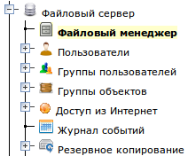
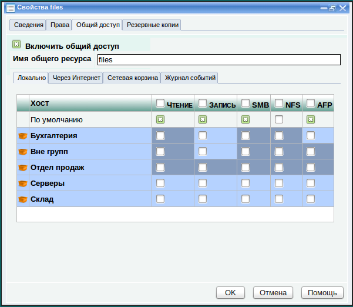

Управление данными сервера
Введение
Для работы с данными файлового сервера предназначен "Файловый менеджер", который находится внутри раздела "Файловый сервер".

При активации этого значка, открывается окно с файловым менеджером.
Изначально на сервере, в корневой общей папке созданы папки: files и utils,
они доступны для чтения и записи всем пользователям, зарегистрированным
на сервере. Если папка является общедоступной, на ее изображении
написаны протоколы, по которым она доступна. Эти папки доступны в
локальной сети по протоколу SMB и видны в Сетевом окружении
Windows. Папка files предназначена для
хранения любых общедоступных файлов, а в папке utils находятся
различные утилиты для работы с сервером, такие как FreeNX для
удаленного подключения к рабочему столу сервера и Putty для удаленного
подключения к командной строке сервера.
Работа с файловым менеджером
Файловый менеджер, встроенный в
Панель управления позволяет перемещаться по файловой системе раздела
данных сервера, а также выполнять с данными различные операции.
Чтобы войти в папку, нужно сделать на
ней двойной щелчок мышью. Чтобы вернуться обратно, нужно сделать
двойной щелчок мышью на папке с именем "..", или нажать кнопку на Панели инструментов.
С помощью кнопок Панели инструментов можно выполнять ряд стандартных операций с файлами и папками.
|
Перейти на уровень выше
|
|
Обновить содержимое окна файлового менеджера
|
|
Загрузить файл с локального компьютера в текущую папку
|
|
Создать новую папку
|
|
Переименовать папку или файл
|
|
Поместить группу файлов и папок в буфер для дальнейшего копирования в другую папку с помощью кнопки "Вставить"
|
|
Поместить группу файлов и папок в буфер для дальнейшего перемещения в другую папку с помощью кнопки "Вставить"
|
|
Вставить в текущую папку файлы и папки, ранее помещенные в буфер с помощью кнопки "Копировать" или "Вырезать".
|
|
Удалить группу файлов и папок
|
|
Открыть
окно свойств файла, папки или группы файлов и папок. С помощью этого
окна можно получить информацию о размере файла или папки, установить
права доступа, сделать папку общедоступной в локальной сети и/или из
Интернет, а также посмотреть резервные копии этой папки, созданные с
помощью механизма теневого копирования данных.
|
Операции с данными
Файловый менеджер позволяет выполнять
ряд стандартных операций с объектами данных (файлами и папками). Можно
создавать новые папки, переименовывать существующие объекты,
копировать, перемещать и удалять их.
Все эти операции выполняются примерно
так же, как в любом другом файловом менеджере. Сначала выделяется
объект и затем нажимается соответствующая кнопка на Панели
инструментов. Для некоторых операций, таких как "Копировать",
"Вырезать", "Вставить" и "Удалить" можно выделить группу объектов. Для
этого нужно нажать клавишу Ctrl или Shift и щелкать мышью по файлам и
папкам, которые нужно выделить. Выделенные объекты помечаются желтым
цветом.
Для создания новой папки войдите в нужную папку, нажмите кнопку , введите имя папки и нажмите OK. Созданная папка появится на диске и в окне файлового менеджера.
Чтобы загрузить в папку файл, войдите в нее, нажмите кнопку
, выберите нужный файл, находящийся на локальном диске вашего
компьютера и дождитесь завершения процесса загрузки. Загруженный файл
появится в окне файлового менеджера.
ПРИМЕЧАНИЕ: Данная кнопка может не отображаться, если Панель управления сервером работает по протоколу HTTPS. Это временное ограничение.
Чтобы переименовать папку или файл, выделите нужный файл или папку, нажмите кнопку , введите новое имя и нажмите OK. Объект переименуется.
Чтобы удалить объект или группу объектов, выделите нужные папки и файлы, нажмите кнопку
и подтвердите намерение выполнить операцию. Объекты исчезнут из окна
файлового менеджера. ВНИМАНИЕ: Файлы и папки, удаляемые в файловом
менеджере Панели управления не попадают в "Сетевую корзину". (О сетевой
корзите см. "
Настройка Сетевой корзины").
Чтобы скопировать группу объектов из одного места в другое, выделите нужные объекты, нажмите кнопку , перейдите в папку, в которую нужно скопировать эти объекты и нажмите кнопку . Копия объектов появится в папке.
Чтобы переместить группу объектов из одного места в другое, выделите нужные объекты, нажмите кнопку , перейдите в папку, в которую нужно переместить эти объекты и нажмите кнопку . Объекты появятся в этой папке, а из своего прежнего места удалятся.
Свойства файлов и папок
Чтобы увидеть окно свойств папки, файла или группы файлов и папок, выделите нужные объекты и нажмите кнопку на Панели инструментов.
Внешний вид этого окна может
отличаться в зависимости от того, что было выделено. Если был выделен
файл, то окно будет содержать только три закладки: "
Сведения" и "
Права"
и "
Резервные копии". На закладке "
Сведения" находится различная
информация о файле, такая как его тип, размер, дата последней
модификации и дата последнего доступа. Также здесь показана информация
о разделе в котором этот файл находится, а именно: "
Общий объем папки"
это общий размер раздела и "
Свободный объем" это объем свободного
пространства на разделе данных. На закладке "
Права" настраиваются права
доступа к этому файлу для его владельца, группы и для всех остальных
пользователей, зарегистрированных в системе. Эти права распространяются
на любые виды доступа к этому файлу: на доступ с самого сервера, на
доступ из локальной сети или через Интернет. Подробнее о настройке прав
доступа к файлам и папкам читайте в следующем разделе. На закладке
"
Резервные копии" можно увидеть все резервные копии этого файла,
созданные механизмом теневого копирования. Подробнее читайте об этом в
разделе "
Теневое копирование данных".
Если была выбрана папка, то также
появляется закладка "
Общий доступ", позволяющая сделать эту папку
доступной в локальной сети и из Интернет. Подробнее о создании общих
папок читайте далее в теме "
Организация общего доступа к папке".
Если окно свойств было выбрано для
группы объектов, то в окне будет только две закладки: "Сведения" и
"Права доступа". Более того, на закладке "Сведения" почти все строки
будут пусты. Единственное, для чего может быть полезен этот режим, это
для установки прав доступа сразу для всей группы выделенных объектов.
Установка прав доступа
Прежде чем настраивать права доступа
пользователей и групп к файлам и папкам, необходимо создать этих
пользователей и группы в системе. Этой теме посвящен раздел руководства
"
Работа с пользователями и группами".
Для установки прав доступа к файлу
или папке используется стандартная система прав доступа POSIX,
расширенная с помощью списков контроля доступа (POSIX ACL). Эта
технология также применяется во всех UNIX-подобных системах и является
законом для всех программ, которые установлены поверх системы. По этой
причине, права доступа, установленные на этом уровне однозначно
работают независимо от того, каким образом пользователь подключился к
серверу. Он может подключиться локально к командной строке сервера,
удаленно к командной строке сервера по протоколу SSH. Он может
подключиться через Сетевое окружение Windows по протоколу SMB, он может
примонтировать общую папку сервера по протоколу NFS или подключиться с
помощью WebDAV или FTP-клиента из Интернет. В любом случае права
доступа к файлам и папкам, установленные на этом уровне будут
действовать и совершенно однозначно определять его возможности по
отношению к объекту.
У каждого объекта файловой системы
(файла или папки) есть владелец. Владелец это обычно пользователь,
который создал этот файл или папку. Также, у каждого объекта файловой
системы есть "владеющая группа", которая также изначально
устанавливается при создании данного объекта и по умолчанию равна
основной группе, в которую входит пользователь, создающий этот файл или
папку. В соответствии со стандартной системой прав доступа POSIX,
к каждому объекту файловой системы привязывается структура,
определяющая права доступа для "владельца" этого объекта, для
"владеющей группы" этого объекта и для "всех остальных
пользователей". Существует три действия, которые контролируют права
доступа:
r - чтение (read)
w - запись (write)
x - исполнение (execute)
Смысл каждого действия различен для файла и для папки, о чем будет написано ниже.
Получается что к каждому файлу или
папке файловой системы, в соответствии со стандартом POSIX
привязывается следующая структура прав доступа
Объект доступа
|
Права
|
Владелец
|
rwx
|
Группа
|
r-x
|
Остальные
|
r
|
Соответственно, если к серверу
подключается пользователь, являющийся владельцем данного файла, он
работает с этим файлом в соответствии с правами, которые прописаны в
этой структуре для "владельца" данного файла. В случае с приведенной
выше таблицей это значит, что владелец получает все права доступа к
этому файлу. В основном владелец всегда имеет полный доступ к своему
файлу, но системный администратор может изменить права владельца либо
вручную, либо с помощью Панели управления. Он даже может изменить
самого владельца, после чего файл будет иметь другого владельца,
отличающегося от реального создателя.
Если подключающийся пользователь не
является владельцем, доступ определяется в зависимости от того, входит
ли пользователь во "владеющую группу", прописанную в структуре прав
доступа, привязанной к этому файлу. Если пользователь входит во
владеющую группу, то он получает права доступа, прописанные для
владеющей группы (в нашем примере он получает права на чтение и на
исполнение данного файла), а иначе, он получает права, прописанные в
этой структуре для "всех остальных пользователей" (только чтение).
Стандартный механизм прав доступа
POSIX при правильном планировании позволяет настроить практически любую
систему прав доступа, но в постоянно меняющемся современном мире он уже
устарел и считается слишком неповороливым и статичным. Для того чтобы
сделать управление доступом в UNIX-подобных системах более простым и
удобным предназначено расширение, называемое "списки котроля доступа"
(Access Control Lists - ACL, POSIX ACL).
Списки контроля доступа позволяют
просто устанавливать права доступа для каждого пользователя и для
каждой группы, которые зарегистрированы на сервере. Однако они не
заменяют стандартный механизм прав доступа, а расширяют его. В
структуру прав доступа, присоединяемую к каждому файлу или папке
добавляются строки для каждого пользователя и для каждой группы,
зарегистрированных на сервере. Соответственно, если на сервере
зарегистрированы пользователи admin и guest, а также группа smbusers
(как сделано по умолчанию в LVA Business Server), структура прав
доступа к файлу может быть такой:
Объект доступа
|
Права
|
Владелец
|
rwx
|
Группа
|
r-x
|
Остальные
|
r
|
admin
|
rw
|
guest
|
r
|
smbusers
|
r-x
|
Таким образом, если в этом списке для
пользователя прописаны права доступа, он работает с этими правами
независимо от того, является ли он владельцем данного файла или папки и
входит ли он во владеющую группу.
В данном случае важно понимать, что в
списке прав доступа может быть ситуация, когда владелец файла также
прописан отдельной строкой. Например, пусть в данном случае владельцем
является пользователь admin. Как владелец он имеет полные права (rwx),
а как пользователь, только чтение и запись (rw). В данном случае
стандартные права имеют приоритет и пользователь admin получит полные
права доступа к файлу. Это же правило распространяется на права доступа
групп объектов к файлу или папке. Установленные права для владеющей
группы имеют более высокий приоритет, чем для этой же группы,
прописанной отдельной строкой в списке контроля доступа.
Перейдя на закладку "Права" в
свойствах файла, мы увидим список контроля доступа, разбитый на две
закладки: "Пользователи" и "Группы":
На закладке "Пользователи"
можно установить владельца данного объекта, а также права доступа всех
пользователей к нему, включая "владельца" и "всех остальных". На
заклакде "Группы" можно установить владеющую группу этого файла и права
доступа этой владеющей группы (строка "Группа") и каждой группы,
зарегистрированной на сервере к этому объекту.
Разберемся, что же реально означают действия r, w и x для файла, и что они означают для папки.
Для файла, действие r это возможность
просмотреть содержимое файла. Пользователь или группа, имеющие
право на это действие, могут открыть файл и прочитать его содержимое.
Действие w это возможность изменить содержимое файла. Пользователь с
таким правом может открыть файл, удалить в нем что-нибудь и даже
полностью обнулить, но не удалить файл. Право на удаление файла
определяется в правах доступа к папке, в которой он находится, о чем
написано в следующем абзаце. Действие x это возможность исполнить файл
как программу, то есть "запустить" файл, это аналогично действию
"сделать двойной щелчок мышью", которое приведет к запуску этого
файла в системе. Данное действие имеет смысл только для UNIX-подобных
клиентов. Клиенты Windows это правило не понимают, так как для них
возможность запустить файл определяется расширением файла (.com, .exe
или .bat).
Теперь рассмотрим что означают эти
действия для папки. С точки зрения файловой системы папка это тоже
файл. Содержимое папки это список имен файлов и папок, которые в ней
находятся, или правильнее сказать - список уникальных идентификаторов
файлов и папок, которые в ней находятся. В каждой строке этого списка
находится по одному идентификатору. Соответственно, действие r это
возможность "прочитать содержимое папки", то есть список файлов и
папок, находящихся в данной папке и отобразить его. Действие w это
возможность "изменить список содержимого папки", то есть состав файлов и папок,
находящихся в данной папке, а именно: добавить в папку новые файлы и папки,
изменить названия существующих или удалить существующие файлы и папки. Действие x, как и в случае с файлом, это возможность сделать
"двойной щелчок мышью" по папке и "запустить ее", то есть, войти в эту
папку.
На основании описанных выше правил можно сделать ряд важных выводов.
1. Если у пользователя есть право на
запись в папку, он может удалить из нее все файлы, независимо от того,
разрешен ли ему доступ к ним (а также переименовать их).
2. Если у пользователя есть право на
запись в папку, в которой находятся подпапки и к этим подпапкам у него
нет права на запись, он может удалить их только в том случае, если они
пустые, так как для рекурсивного удаления содержимого подпапок будет требоваться
право на запись в каждую из них.
3. Некоторые люди не понимают для
папки смысла действия "x" без действия "r" и считают что в любом случае
нужно давать право "r-x". Действие "x" позволяет "войти в папку",
не видя ее содержимого. Оно также позволяет "пройти через папку".
Поэтому если у папки установлено только право "x", пользователь может
войти в нее и не видя ее содержимого войти в какую-либо ее подпапку,
если знает ее название. Иногда это может быть очень полезным для того,
чтобы пользователь имел возможность войти в подпапку и при этом не
видел бы остальных подпапок, окружающих ее.
На рисунке, показанном выше, приведен
интерфейс для настройки прав доступа к файлу. Для настройки прав
доступа к папке он выглядит несколько иначе:
Кроме первой группы флажков "Права текущие",
с помощью которых устанавливаются права доступа к этой папке для
каждого пользователя или группы, также появилась вторая такая же группа
флажков "Права наследуемые". С
ее помощью устанавливаются права, которые будут устанавливаться по
умолчанию для папок и файлов, которые будут создаваться в этой папке.
Например, если вы хотите чтобы
пользователь мог записывать файлы в папку, но не мог после этого
изменить их содержимое, установите флажки "rwx" в первой группе, и "r"
во второй группе в строке для этого пользователя. Также установите "r"
во второй группе флажков для "владельца", так как при появлении нового
файла в этой папке, пользователь, который его записал или создал будет
его владельцем и получит права, установленные в группе "Права
наследуемые" для владельца этого файла.
После такой настройки прав доступа, при записи файла в
папку, для него будет устанавливаться право "r" и для владельца, и для
пользователей и они смогут его только прочитать, но не изменить (но они
конечно же смогут удалить его и переименовать, так как имеют право на
запись в эту папку).
Также, при установке прав доступа к
папке, вы можете включить флажок "Применить ко всем вложенным каталогам и
файлам". В этом случае установленные в этом окне права доступа получат
все файлы и папки, вложенные в данную.
После установки прав доступа нажмите
кнопку "Сохранить" и права доступа сразу же будут актуальны для всех
текущих и новых подключений к серверу.
Организация общего доступа к папке
Любую папку можно сделать доступной
как в локальной сети, так и из Интернета. Для настройки общего доступа
предназначена закладка "Общий доступ" в окне свойств папки. Чтобы
организовать общий доступ к папке, нужно перейти на эту закладку и
включить флажок "Включить общий доступ".

Интерфейс позволяет сделать папку
доступной для локальной сети и из Интернет, для чего предназначены
соответственно закладки "Локально" и "Через Интернет". Папку,
сделанную доступной по локальной сети можно привязать к дополнительным
службам
сервера, настроив параметры на закладках "Сетевая корзина" и "Журнал
событий":
- Можно определить, что будет происходить с данными этой общей
папки при удалении. По умолчанию они удаляются безвозвратно, однако на
закладке "Сетевая корзина" можно включить поддержку корзины. Если
включена корзина, то при удалении данных из общей папки, эти данные
будут попадать в определенную папку, отведенную под корзину и храниться
в ней определенный промежуток времени, что позволяет восстановить их.
- В журнал событий попадают записи о всех действиях, которые
осуществляют компьютеры локальной сети с файлами и папками на сервере.
На закладке "Журнал событий" можно указать, будут ли попадать записи о
событиях с данными этой общей папки в журнал событий.
Настройка общего доступа для локальной сети
На закладке "Локально" настраивается
доступ к общей папке из локальной сети. Можно настроить уровень доступа
как для всей сети в целом, так и для каждого компьютера в отдельности.
Компьютеры должны быть предварительно зарегистрированы в "Сетевом
центре". Подробнее о работе с Сетевым центром написано в соответствующем
разделе.
Компьютеры в этом списке разделены по группам. Для удобства работы с правами доступа в больших сетях, для
каждого хоста можно указать, к какой группе он относится. Подробнее об
этом написано в разделе "
Работа с группами объектов". Соответственно в
этой таблице показаны хосты, объединенные в группы.
Если заголовок группы имеет жирное начертание, значит в этой группе есть компьютеры.
Хосты, которые не входят ни в одну из групп отображаются в группе с названием "Вне групп".
Каждую группу можно развернуть, чтобы увидеть компьютеры, которые в ней находятся. Для этого используется значок :
Здесь показана группа "Серверы" в развернутом виде. Теперь можно включить
флажки, чтобы настроить права доступа этих компьютеров к общей папке.
Если нажать флажок "Чтение" или "Запись" в строке с наименованием
группы, то это автоматически включит или выключит соответствующий
флажок для всех компьютеров, входящих в группу.
Вы можете оценивать состояние свойств "Чтение", "Запись", "SMB", "NFS" и "AFP" членов группы, не разворачивая ее. Если флажок в строке группы включен,
значит этот флажок включен у каждого компьютера этой группы. Если
флажок выключен, значит он выключен у всех членов группы. Если флажок
выключен, но находится на более темном фоне, значит внутри этой группы
у части компьютеров он включен, а у остальных выключен.
Также, в этой таблице есть три дополнительных столбца: "SMB", "NFS" и "AFP".
Если вы предоставляете доступ к общей папке определенным компьютерам
или всем компьютерам по умолчанию, обязательно нужно указать, по каким
протоколам этот доступ будет предоставляться. Система позволяет
предоставлять доступ к общей папке по следующим протоколам:
- SMB - протокол,
разработанный корпорацией Microsoft. Он используется клиентами Windows
для доступа к общим папкам. Также клиенты UNIX и MacOS могут обращаться к общим
папкам по этому протоколу, если в их системах установлена клиентская часть пакета Samba
- NFS
- протокол, разработанный корпортацией Sun Microsystems.
Он используется клиентами UNIX/Linux для доступа к общим папкам. Также
клиенты Windows могут обращаться к общим папкам по этому протоколу,
если в их системах установлен пакет "Windows Services for UNIX".
Клиенты MacOS также могут обращаться к общим папкам по этому протоколу,
если на них настроена служба NFS.
- AFP
- протокол, разработанный корпорацией Apple. Он используется на
устройствах работающих под управлением MacOS для предоставления доступа
к общим папкам. Также клиенты UNIX могут обращатся к общим папкам по
этому протоколу, если в их системах установлена поддержка файловой
системы afpfs (установлен пакет afpfs-ng-utils).
Чтобы общая папка была доступна любым клиентам, включите все флажки (и SMB и NFS и AFP).
Методика настройки прав доступа
Настраивать права доступа нужно в зависимости от стратегии
разграничения доступа, которую вы выбрали. Всего стратегий может быть
три:
- Разграничение прав доступа по пользователям и группам
- Разграничение прав доступа по компьютерам
- Разграничение прав доступа по пользователям, группам и компьютерам
Для того чтобы правильно настроить права доступа для каждой из этих
стратегий нужно понимать, как права доступа для каждого объекта
накладываются друг на друга. Об этом написано в разделе "
Немного
теории", вернитесь к нему чтобы освежить память.
Если вы решили ограничить права доступа определенным пользователям и
группам, то нужно выставить нужные права доступа на закладке
"Права", а на закладке "Локально" нужно дать полный
доступ всем компьютерам, включая доступ в строке "По умолчанию". При этом обязательно нужно указать, по каким протоколам будет предоставляться доступ: по SMB, NFS или AFP.
Если вы решили ограничить права доступа определенным компьютерам, то
нужно выставить нужные права доступа для компьютеров на закладке
"Локально", а на закладке "Права" дать полный доступ
всем пользователям и группам, включая доступ в строке "По умолчанию".
Если вы решили разграничить права доступа одновременно и пользователям
и компьютерам, то права доступа настраиваются на всех закладках
одновременно. При этом очень важно понимать то, каким образом сервер в
этом случае будет их проверять. При подключении клиента, сервер сначала
проверяет, имеет ли его компьютер права доступа к общей папке и если
компьютер проходит проверку, то проверяется, имеет ли пользователь, от
имени которого производится подключение право на доступ к этому общему
ресурсу.
Настройка "Сетевой корзины"
На закладке "Сетевая корзина" можно включить функцию "Сетевой корзины" для данной общей папки и настроить ее параметры.
Если флажок "Включить сетевую корзину" включен, все даннные, удаляемые из данной общей папки не удаляются, а перемещаются в другую папку, которая указывается в поле "Путь к корзине" и хранятся в ней количество дней, указанное в поле "Период хранения в корзине (дней)".
В качестве пути к корзине указывается любая существующая папка на диске
(не обязательно, чтобы она была внутри контейнера общих папок) по
такому же принципу, как указывается путь к самой общей папке. У каждой
общей папки может быть своя папка-корзина, или можно указывать одну
корзину для всех.
В качестве периода хранения
указывается количество дней, которые каждый файл хранится в корзине.
Файлы, срок хранения которых превышен, автоматически будут удаляться из
корзины каждую ночь в 23:59. Если в качестве периода хранения указано число 0, содержимое корзины не будет устаревать никогда.
Чтобы получить доступ к содержимому корзины, нужно сделать саму корзину общей папкой и настроить права доступа к ней.
ВНИМАНИЕ!
Сетевая корзина работает только при доступе к файлам по протоколу SMB !
При доступе по протоколам NFS, AFP, FTP, WebDAV, SSH, а также при
доступе к файловой системе сервера из командной строки или через
графический интерфейс корзина не работает.
Имейте это в виду. Если Вам нужна реально работающая служба сетевой
корзины, настройте клиентов так, чтобы они работали с сервером только
по протоколу SMB. Протокол SMB(CIFS) поддерживает любая настольная
операционная система.
Компания ЛВА ведет работы по организации службы корзины независимо от
используемого протокола доступа к файлам сервера. Как только эта
функция пройдет тестовые испытания, она войдет в очередное обновление
платформы.
Настройка ведения журнала событий для общей папки
Система ведет единый журнал событий
со всеми данными, которые хранятся на файловом сервере. С его помощью
можно узнавать кто подключается к серверу и к каждой его общей папке,
кто удалил определенный файл или куда и когда переместил его. Подробнее
работа с журналом событий описана в разделе "
Работа с журналом событий"
в данном руководстве.
В журнал событий попадают события только с общими папками, у которых на закладке "Журнал событий" установлен флажок "Включить события с этой папкой в журнал событий".
Настройка общего доступа из Интернет
На закладке "Из Интернет" есть всего один флажок: "Опубликовать в Интернет".
При его включении, данная папка
становится доступной через Интернет по протоколам WebDAV и FTP для всех
пользователей, которым не запрещен доступ к серверу из Интернет и
которые имеют права на чтение или на запись в эту папку. Подробнее о
механизмах, которые используются для обеспечения доступа к общим папкам
из Интернет, читайте в разделе "
Организация доступа к серверу из Интернет".
Вы прочитаете в этом разделе о том, что у каждого пользователя,
которому разрешен доступ к серверу из Интернет, есть "домашняя папка
Интернет". Путь к этой папке указывается в окне свойств пользователя.
При подключении к серверу по протоколу FTP или WebDAV, пользователь
оказывается в своей домашней папке. Если вы делаете папку
общедоступной из Интернет, на нее создается ссылка в "домашних папках
Интернет" всех пользователей, которые имеют права доступа к этой общей
папке. Важно понимать, что не нужно включать флажок "
Опубликовать в
Интернет" для самой домашней папки пользователя, потому что он и так в
нее попадает при подключении. "Домашняя папка Интернет" и "Папка,
доступная из Интернет" это разные понятия. "Папки, доступные из
Интернет" монтируются внутрь "домашней папки Интернет", а сама домашняя
папка таковой не является.
После выполнения всех настроек,
нажмите кнопку "Сохранить". Настройки сразу же будут применены. Если
папка стала общей, на ее значке в Файловом менеджере появятся надписи,
показывающие, по каким протоколам она доступна: SMB - по протоколу SMB
(клиенты Windows), NFS - по протоколу NFS (клиенты Unix), AFP - по протоколу AFP (клиенты MacOS), FTP - по
протоколу FTP из Интернет, DAV - по протоколу WebDAV из Интернет.